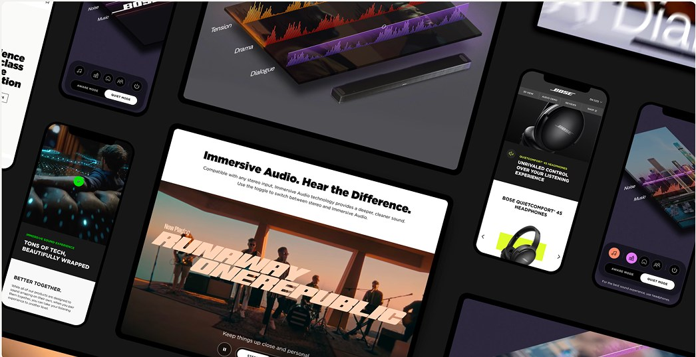
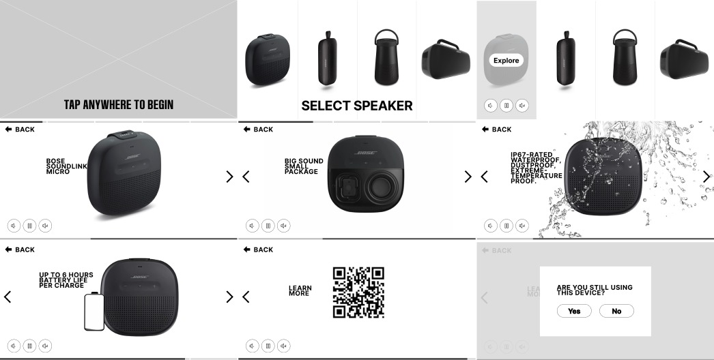
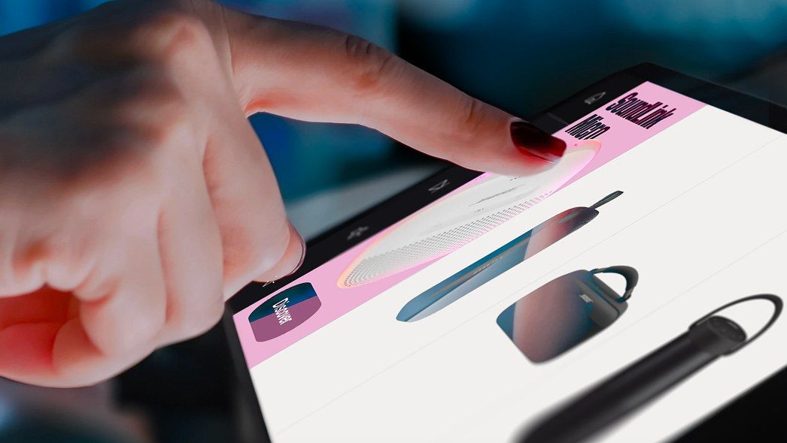
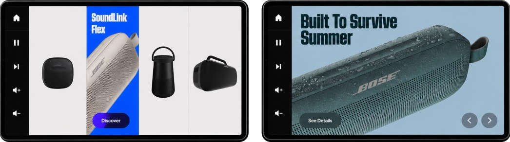
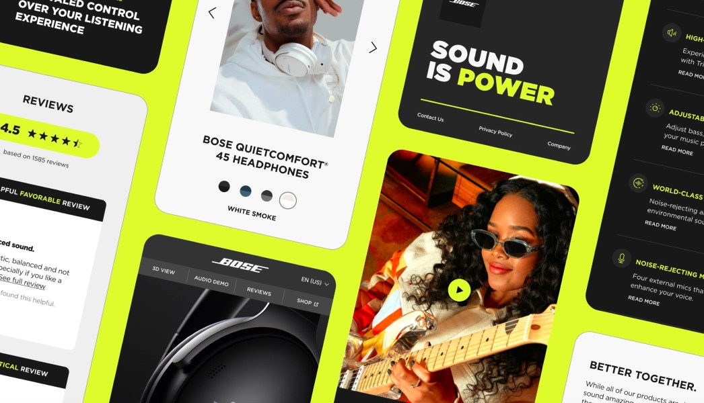

Bose · Digital retail
Amplifying experiences through immersive brand moments
Bose asked us to rethink their big-box retail displays, starting with Best Buy. Grounded in extensive customer research and in-store behavior, we began with collaborative workshops, then meticulously crafted each interaction within a highly constrained physical form factor. The result was a refined, intuitive experience brought to life through award-winning design.

01 · The constraint
We couldn’t ask the room to accommodate the interface.
Screen size, viewing angle, the hardware and the product itself set the terms before a single pixel was drawn.

02 · Research
Years of insight already existed. Our job was to find what mattered.
Rather than starting research from zero, we immersed ourselves in what Bose already knew about shopping behaviour, demonstrations and the questions customers ask before buying.

03 · Visual language
Sophisticated enough to sit beside the industrial design.
The interface had to reinforce precision, clarity and simplicity without competing with the products around it.


Impact
Constraints aren’t separate from the design problem. They are the design problem.

Next project
MAC Cosmetics —
the store remembers you.